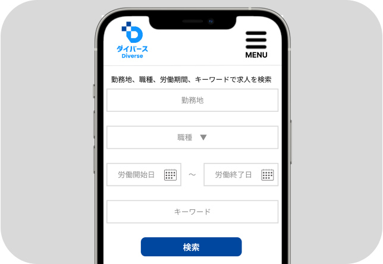
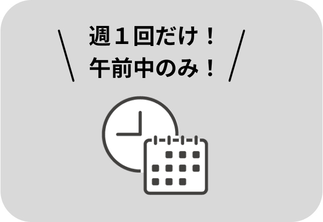
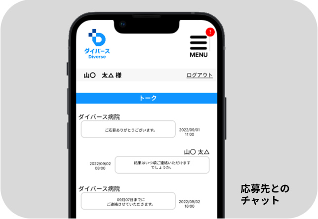

ライフスタイルに合わせて
医師・看護師・薬剤師等の
お仕事をしたいかたに
おすすめです！

登録なしで
求人検索できる

会員登録をせずに、医師・看護師・薬剤師等の医療従事者向けの求人を検索することができます。興味のある求人に応募する際に会員登録をします。
半日〜の短期で
働ける！

半日だけ、1ヶ月だけなどの短期の求人に特化しているので、ライフスタイルに合わせた期間で働けます。
資格を活かして無理なくお仕事を始められます。
無料で利用できる！

医師・看護師・薬剤師等の医療従事者向けに特化した求人検索、応募、応募先とのチャット、契約書や給与明細の確認など全ての機能を無料でご利用頂けます。
例えばこんな求人が！
医師
日給 4.5万円
時間 午前中のみ
病院内の職員健診の診療をお任せいたします
歯科医師
日給 10万円
時間 9:30〜19:00
（休憩1h）週1日からOK
成人矯正と小児矯正がメイン
看護師
日給 3.5万円
時間 夜勤専従
夜間のご入居者の看護業務をご担当いただきます
薬剤師
時給 1,500〜2,950円
時間 9:00〜13:00
歯科衛生士業務全般
子育て中の方も両立可
理学療法士
時給 4,500〜8,600円
時間 9:00〜20:00の中で
1件（90分）からOK
訪問リハビリセラピスト
直行直帰OK
作業療法士
時給 4,000円〜
時間 訪問4件/日
1件（90分）からOK
調剤業務全般
ダブルワーク可
管理栄養士
時給 1,500〜1,800円
時間 週2（週15h）〜OK
オンラインで特定保健指導
スキルによる健康サポート

介護士
時給 2,000〜3,200円
時間 最低2時間
スキマ時間勤務OK
調剤業務全般
在宅支援、介護ヘルパー
医療事務
時給 1,500〜1,800円
時間 週2（週15h）〜OK
クリニックでの医療事務
レセプト経験者優遇
※上記の求人は、すでに掲載終了している場合がございます。
多様な働き方を
今から考えてみませんか？
2024年「医師の働き方改革」が始まります。
医師の働き方の適正化に向けた取り組みが
実行される予定です。
一般の医師は勤務時間が長く、
1週間の労働時間が60時間を超える医師は
41.8%に上ります。
医師が今まで通りに働くことが出来なくなったら、
何が起こるでしょうか？
医師が石だけにしかできない業務に専念できる一方、
医師の業務時間が短縮し、
医師以外の職種の業務範囲が拡大することでしょう。
人それぞれの働き方、働く時間、収入に
大きな変化が起こることが予想されます。
ぜひ今から、ご自身のライフスタイルに合わせた
多様な働き方を考えてみませんか？
運営会社
株式会社キャリアウィン